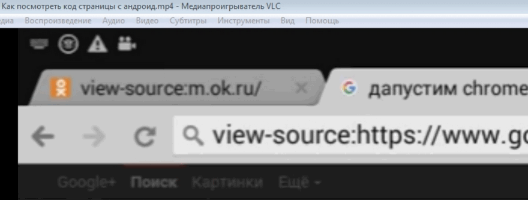
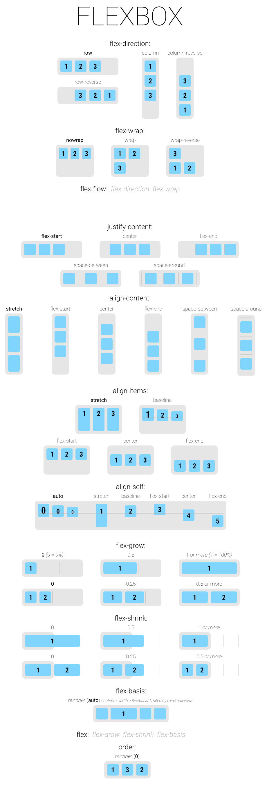
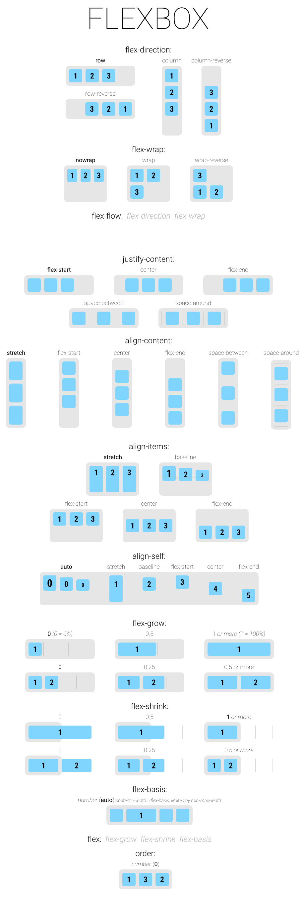

| VS Code - Keys | |
|---|---|
| Alt + ↑ / ↓ | Move Line - up/down |
| Alt + Shift + ↑ / ↓ | Copy Line - up/down |
| Ctrl + C | Copy Line (empty selection) |
| Ctrl + X | Cut Line (empty selection) |
| Ctrl + Delete | Delete Line |
| Ctrl + G | Go to Line Number |
| Alt + ← / → | Go to Prev / Next Position |
| Shift + Alt + Drag Mouse | Column (box) selection |
| Ctrl + / | Line comment - ON/OFF (Знак / левее Shift) |
| Ctrl + Alt + / | Block comment - ON/OFF (Знак / левее Shift) |
| Ctrl + B | Left Side Bar - ON/OFF |
| Ctrl + Num 2 | Split Editor Vertical |
| Ctrl + \ | Split Editor Horizontal |
| Ctrl + F4 | Close splited part of Editor / Editor |
| Tab | Move to Right Side - code in selected code lines |
| Shift + Tab | Move to Left Side - code in selected code lines |
| Alt + M | Merge Branch |
| Ctrl + S | Save this File |
| Ctrl + Alt + S | Save all Files |
| Ctrl + Tab | Open next File |
| Ctrl + Shift + Tab | Open previous File |
| Emmet - Keys | |
| Tab | Expand Tag |
| CSS Peek - Keys | |
| F12 | Open tab with CSS File - in definition's place |
| Alt + F12 | Open definition's place in new below half-window |
| Ctrl + Hover | Open definition in new pop-up window |
| Ctrl + Click | Open tab with CSS File - in definition's place |
| Git History - Keys | |
| Alt + G | View git log, file history, compare branches or commits |
В body написать: p*4>lorem20
Тогда создается 4 параграфа длиной 20 слов каждый.
 Linux - Terminal
Linux - Terminal | Linux - Terminal | |
|---|---|
| Ctrl + Alt + T | Старт терминала Linux |
| Tab 2 раза | Автодополнение команд |
| whoami | Print the user name associated with the current effective user ID |
| sudo -i | Режим root |
| Ctrl + D | Выход из режима root |
| Стрелки ↑ / ↓ | Выбрать предыдущую / следующую команду терминала |
| history | Список предыдущих команд |
| ! + number | Выполнение команды из списка предыдущих команд |
| pwd | Print the name of the current working directory |
| ls | List information about the FILEs (the current directory by default) |
| ls -a | Показать в т.ч скрытые файлы |
| cd + "dir" | Change the shell working directory |
| cd + .. | На 1 каталог вверх |
| cd + ~ | В корневой каталог |
| cd + - | В предыдущий каталог |
| mkdir | Create the DIRECTORY(ies), if they do not already exist |
| apt list --upgradable | Апгрейд нада? |
| sudo apt update && sudo apt upgrade -y | Update && Upgrade Now ! |
| Ctrl + C | Прерывание команды в терминале |
| exit | Закрыть терминал или закрыть процесс в терминале |
| q | Закрыть процесс в терминале |
| Сторонние и интегрированные программы | |
| cd /android-studio/bin/ | Переход в каталог старта Адроид студии |
| ./studio.sh | Старт Адроид студии |
| mc | Norton Commander в терминале |
| Ctrl + O | Скрыть панели Norton Commander |
| F10 на панели | Выход из Norton Commander в терминале |
| nano | Встроенный в терминал текстовый редактор nano |
| Ctrl + X | Выход из nano |
| top | Встроенная утилита типа == системный монитор |
| htop | Утилита как top, но круче |
| node -v | Версия node |
| npm -v | Версия npm |
| dotnet --list-sdks | Версия среды разработки dotnet |
| dotnet --list-runtimes | Версия среды выполнения dotnet |
| H E L P | |
| help | Display information about builtin commands |
| help + "name" | Хелп по команде "name" терминала |
| man + "name" | Мануал по команде "name" терминала |
| neofetch | Display information about system |
| date | Текущая дата |
| uptime | Инфа о текущем сеансе Linux |
| Алиасы (если созданы юзером) | |
|---|---|
| co | checkout |
| ci | commit |
| st | status |
| br | branch |
| hist | history |
| Управляющие клавиши во время выполнения команды | |
| h | help |
| q | exit |
| z | forward one window |
| w | backward one window |
| ESC SPACE | forward one window, but don't stop when EOF |
| r | repaint screen |
| Клонирование репозитория | |
| git clone https//github.com /%username%/%reponame%.git | Команда в каталоге куда клонируется каталог из origin |
| Создание репозитория | |
| git init | Инициализировать новый репо (в каталоге создаваемого репо) |
| git add name.ext | Добавить в список готовых к коммиту файл name.ext |
| git add . | Добавить в список готовых к коммиту все файлы |
| git commit -m "comment" git ci -m "comment" | Сделать коммит - т.е добавить файлы в локальный репозиторий. Камент обязателен!!! |
| git tag v_1.0 | Можно добавить к коммиту таг - т.е метку |
| git diff | После редактирования можно проверить что изменилось в еще не подготовленных к коммиту файлах (т.е до git add) |
| git diff --staged | После редактирования можно проверить что изменилось в уже подготовленных к коммиту файлах (т.е после git add) |
| git log --decorate | Показывает коммиты и где HEAD |
| Операции отмены | |
| git rm file.ext | Удалить файл из отслеживаемых а также из каталога |
| git rm --cached file.ext | Удалить файл из отслеживаемых но оставить его в каталоге |
| git checkout -- file.ext git co -- file.ext | Отменить изменения в файле сделанные до команды add (при этом изменения восстановить невозможно) |
| git reset HEAD name.ext | Отменить команду add для файла |
| git mv 'old_name.ext' 'new_name.ext' | Переименовать файл. Имя - без пробелов ! |
| Создание ветки | |
| git branch branch-name git br branch-name | Создать новую ветку branch-name, но переключения HEAD на нее не происходит |
| git checkout branch-name git co branch-name | Переключить HEAD на ветку branch-name, ФАЙЛЫ В РАБОЧЕМ КАТАЛОГЕ ПОМЕНЯЮТСЯ (если эти файлы сохранены в репо в разных ветках) |
| git merge branch-name | Слить ветку branch-name с веткой master. Если была еще ветка, слияние ее не затронет |
| git branch -d branch-name git br -d branch-name | Удалить ветку branch-name (HEAD = kk3.2) |
| В чертеже или эскизе | ||
|---|---|---|
| Геометрия | ||
| O | Отрезок (Offcut) | Геометрия |
| L | Линия - последовательность отрезков и дуг | Геометрия |
| U | Прямоугольник | Геометрия |
| Alt + L | Непрерывный ввод - последовательность отрезков, дуг, сплайнов | Геометрия |
| C | Окружность (в 3D сборке - совпадение объектов) | Геометрия |
| A | Осевая линия по двум точкам | Обозначения |
| Alt + K | Прямая на произвольный угол | Геометрия |
| Alt + P | Прямая параллельная отрезку | Геометрия |
| Alt + G | Прямая горизонтальная | Геометрия |
| Alt + V | Прямая вертикальная | Геометрия |
| D | Линейный размер (Dimension) | Размеры |
| G | Простановка позиций сборки | Обозначения |
| Редактирование | ||
| Alt + A | Деформация сдвигом указываемых объектов | Редактор |
| Alt + C | Копирование выделенных объектов (Copy) | Редактор |
| Alt + M | Перемещение выделенных объектов (Move) | Редактор |
| Alt + R | Поворот выделенных объектов (Rotate) | Редактор |
| Alt + T | Удлиннить до ближайшего объекта | Редактор |
| Alt + S | Усечь участок кривой по границе объектов | Редактор |
| Alt + Z | Выровнять объекты по границе | Редактор |
| Управление документом и интерфейсом | ||
| X | Окно Переменных открыть/закрыть | Вид |
| R | Дерево Чертежа открыть/закрыть | Вид |
| ] | Параметры текущего документа и системы открыть | Сервис СервисПараметры для Чертеж |
| T | Тех.Требования на чертеже - редактирование | Вставка Ввод Техн. Треб. |
| [ | Тех.Требования на чертеже - размещение | Вставка ВставкаТехн.Треб.Разм |
| \ | МЦХ модели - открыть инфо | Сервис МЦХ модели |
| V | Создать на чертеже произвольный вид с 3D модели | Виды |
| W | Создать проекционный вид с существующего вида на чертеже | Виды |
| Alt + W | Создать местный разрез на существующем виде чертежа | Виды |
| F9 | Показать весь чертеж или модель | |
| J | Свойства чертежа | Файл |
| В 3D детали и сборке | ||
| Z | Показать Свойства 3D модели (закрыть Ctrl + Enter) | Файл |
| I | Инфо об указанном объекте | Измерения 3D Информация об объекте |
| В 3D сборке | ||
| M | Переместить деталь | Ред.сборки |
| R | Повернуть деталь | Ред.сборки |
| A | Добавить в 3D сборку компонент из файла | Ред.сборки |
| S | Соосность объектов | Сопряжения |
| C | Совпадение объектов | Сопряжения |
| D | Расстояние между объектами задать (в эскизе и чертеже - размер) | Сопряжения |
| Q | Расстояние и угол между объектами измерить | Измерения 3D |
Иногда объект, который требуется выбрать в окне модели, расположен близко к другим объектам, или наложен на них, или скрыт под ними. При этом трудно (а иногда и вовсе невозможно) указать его курсором.
Для выбора любого из близко расположенных (в том числе наложенных друг на друга) объектов воспользуйтесь перебором объектов. Перебор возможен, когда система ожидает указания или выделения объекта, а в «ловушку» курсора попадает более одного объекта.
Чтобы выбрать один из скрытых, совпадающих или близко расположенных объектов, выполните следующие действия:
| Excel | |
|---|---|
| Alt + F11 | VBA Editor |
| Alt + F8 | Панель списка макросов для их выполнения или редактирования |
| F9 | Пересчет формул во всех открытых рабочих книгах |
| Ctrl + Shift + F9 | Пересчет всех формул, в т.ч. созданных в VBA |
| VBA | |
| Alt + F11 | View Excel |
| F2 | Object Browser |
| F5 | Run - выполнение программы |
| F8 | Step Into - выполнение одного оператора программы |
| Ctrl + F8 | Run To Cursor - выполнение до текущей позиции курсора |
| F9 | Toggle Breakpoint - установка или удаления точки останова |
| Ctrl + Tab | Переключение между окнами редактора VBA |
| Alt + ← | Перейти к предыдущему виду |
| Alt + → | Перейти к последующему виду |
| Ctrl + 0 (zero) | Показать страницу целиком |
| Ctrl + 1 | Показать истинный размер страницы (100%) |
| Ctrl + 2 | Показать страницу по ширине |
Just insert text 'view-source:' before text 'https://'
Зачетная таблица кодов основных символов Unicode => https://dev.w3.org/html5/html-author/charref. При наведении курсора на квадратик с символом и его аббревиатурой на квадратике кроме этого появляется код символа в десятичной и шестнадцатиричной системах а на всплывающей подсказке - имя символа и код для JS (но с лишним нулем). При отсутствии инета см. оффлайн версию
HTML UTF-8 Reference => https://www.w3schools.com/charsets/ref_html_utf8.asp; Полный список символов => https://www.unicode.org/charts
Чтобы показать на html странице ссылку на какой-нибудь специальный символ в виде текста надо вместо символа & (амперсанд) использовать его аббревиатуру (entity): &. Узнать юникод символа в текстовом файле можно если открыть файл в Word, выделить символ и нажать Alt + x
| Entity | d = Ø50 ° | d = Ø50° |
| Dec | d = Ø50 ° | d = Ø50° |
| Hex | d = Ø50 ° | d = Ø50° |
Для вставки специальных символов через CSS код можно использовать только 16-ричный код и не в том виде, что он дан в таблице. Каждый 16-ричный символ в таблице кодируется так - &#x"шестнадцитиричный код"; если вы хотите добавить символ, то вам нужно скопировать необходимый "шестнадцитиричный код" из таблицы (без приставки &#x), поставить перед ним обратный слеш \ и добавить его при помощи свойства content. Чаше всего также для использования свойства content применяют псевдоклассы :before или :after.
Для вставки специальных символов через JS вам нужно скопировать необходимый "шестнадцитиричный код" из таблицы (без приставки &#x), поставить перед ним обратный слеш \ и букву 'u', т.е = '\u' и добавить его при помощи кода JS
| CSS | <style>p.str8::after{content:'\00B0';}</style><p class="str8">A = 50</p> | A = 50 |
| JS | v_ex.textContent = `D\u2081 = \u00F8${mult(a1, b1)} - \u03B1 - \u2205`; |
| Char | Dec | Hex | Entity | Name | JS | С клавы |
|---|---|---|---|---|---|---|
| " | " | " | " | QUOTATION MARK | \u0022 | Alt + 0034 |
| % | % | % | PERCENT SIGN | \u0025 | Alt + 0037 | |
| & | & | & | & | AMPERSAND | \u0026 | Alt + 0038 |
| ° | ° | ° | ° | DEGREE SIGN | \u00B0 | Alt + 0176 |
| ± | ± | ± | ± | PLUS-MINUS SIGN | \u00B1 | Alt + 0177 |
| ² | ² | ² | ² | SUPERSCRIPT TWO | \u00B2 | Alt + 0178 |
| ³ | ³ | ³ | ³ | SUPERSCRIPT THREE | \u00B3 | Alt + 0179 |
| ³ | &sup4; | SUPERSCRIPT FOUR | \u2074 | |||
| ¼ | ¼ | ¼ | ¼ | VULGAR FRACTION ONE QUARTER | \u00BC | Alt + 0188 |
| ½ | ½ | ½ | ½ | VULGAR FRACTION ONE HALF | \u00BD | Alt + 0189 |
| ¾ | ¾ | ¾ | ¾ | VULGAR FRACTION THREE QUARTERS | \u00BD | Alt + 0189 |
| × | × | × | × | MULTIPLICATION SIGN | \u00D7 | Alt + 0215 |
| Ø | Ø | Ø | Ø | LATIN CAPITAL LETTER O WITH STROKE | \u00D8 | Alt + 0216 |
| ø | ø | ø | ø | LATIN SMALL LETTER O WITH STROKE | \u00F8 | Alt + 0248 |
| α | α | α | α | GREEK SMALL LETTER ALPHA | \u03B1 | Alt + 0945 |
| β | β | β | β | GREEK SMALL LETTER BETA | \u03B2 | Alt + 0946 |
| δ | δ | δ | δ | GREEK SMALL LETTER DELTA | \u03B4 | Alt + 0948 |
| π | π | π | π | GREEK SMALL LETTER PI | \u03C0 | Alt + 0960 |
| σ | σ | σ | σ | GREEK SMALL LETTER SIGMA | \u03C3 | Alt + 0963 |
| τ | τ | τ | τ | GREEK SMALL LETTER TAU | \u03C4 | Alt + 0964 |
| ₁ | ₁ | ₁ | SUBSCRIPT ONE | \u2081 | Alt + 8321 | |
| ₂ | ₂ | ₂ | SUBSCRIPT TWO | \u2082 | Alt + 8322 | |
| ₃ | ₃ | ₃ | SUBSCRIPT THREE | \u2083 | Alt + 8323 | |
| ∅ | ∅ | ∅ | ∅ | EMPTY SET | \u2205 | Alt + 8709 |
| ∑ | ∑ | ∑ | ∑ | N-ARY SUMMATION | \u2211 | Alt + 8721 |
| √ | √ | √ | √ | SQUARE ROOT | \u221A | Alt + 8730 |
| ∛ | ∛ | ∛ | CUBE ROOT | \u221B | Alt + 8731 | |
| ∜ | ∜ | ∜ | FOURTH ROOT | \u221C | Alt + 8732 | |
| ∞ | ∞ | ∞ | ∞ | INFINITY | \u221E | Alt + 8734 |
| ∠ | ∠ | ∠ | ∠ | ANGLE | \u2220 | Alt + 8736 |
| ≤ | ≤ | ≤ | ≤ | LESS-THAN OR EQUAL TO | \u2264 | Alt + 8804 |
| ≥ | ≥ | ≥ | ≥ | GREATER-THAN OR EQUAL TO | \u2265 | Alt + 8805 |
| ⌀ | ⌀ | ⌀ | DIAMETER SIGN | \u2300 | Alt + 8960 |
 
